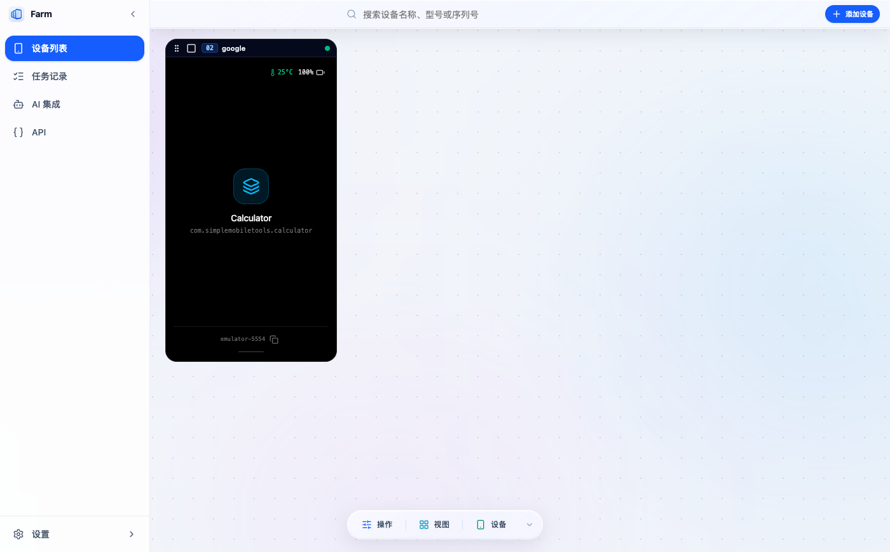
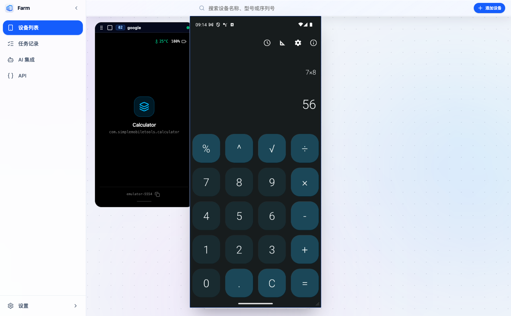
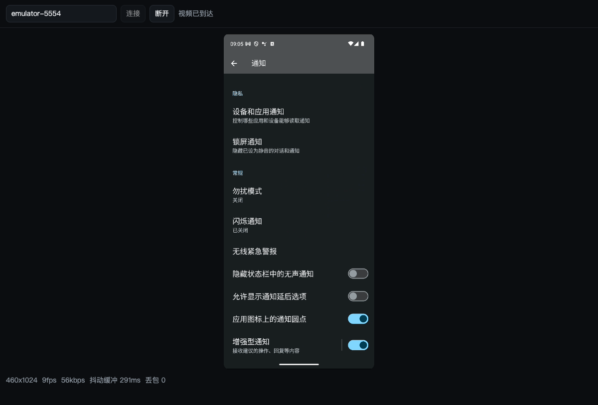
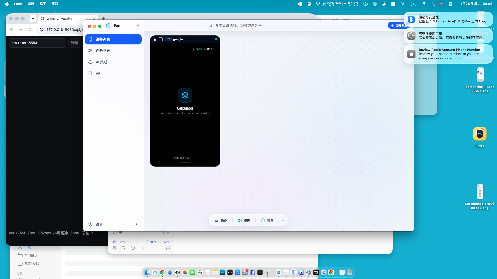
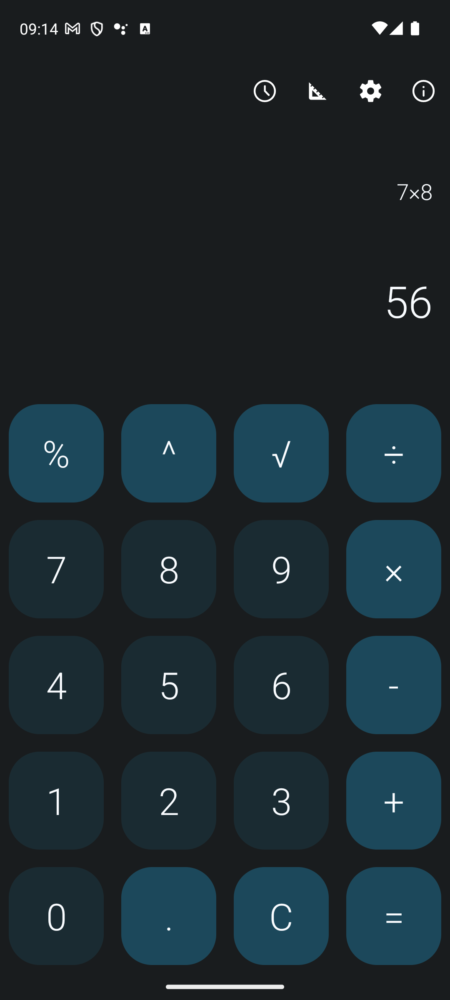

Farm Mac mini 测试报告
2026-11-28 · main a6bfaa4 · 目标机 Mac mini 10.0.0.11（macOS 26.7.1 · arm64）· Chrome 158.0.8127.88
打包路径回归通过profile 归一化在 Mac + Chrome 实测通过包内含修复需等 beta.2
安装包v2026.11.25-beta.1macos-arm64-gui.dmg · SHA-256 与 Release 一致（a6a6871f…c371a）
替换安装/Applications/Farm.appBundle 2026.11.25-beta.1 · 端口 1989 · health 200
WS 投屏460×1024 · 200 帧/6 sH.264 + aac 元数据、心跳、latest-frame 1080×2400
WebRTC 出画460×1024 · 16 fps丢包 0 · 抖动缓冲 12~227 ms · state=connected
结果
| 通过 | Release 包摘要核验与替换安装、桌面端启动、/api/version/health、/api/desktop/config、设备发现、PoC 路由默认 404、WS H.264 投屏与心跳、latest-frame、UI 设备列表与镜像面板、镜像画面点击下传（设备端 7×8=56）、/api/automation/act 的 tap + check 56；修复版服务的 offer SDP profile 归一化、浏览器协商成功、首帧到达、活动画面 16 fps 丢包 0、单测与 go vet 全过。 |
|---|---|
| 不通过 | 无阻塞项。 |
| 未覆盖 / 待复测 | High profile 场景未在 Mac mini 复核：目标设备 Redmi（上次 SPS 64000a）本次 adb connect 返回 No route to host（设备可 ping 通、adbd 未监听），全程未恢复；本次仅有模拟器（42c029）。High 分支由单测 TestOfferSDPUsesBrowserCompatibleProfile 与 11-28 Windows 11 + Edge 实测覆盖，Mac 端同场景待设备恢复后复测。 |
| 观察项 | 静态画面（scrcpy 无新帧）时浏览器请求关键帧，服务端 RESET_VIDEO，统计 0 fps；画面一变化立即回到 16 fps，与 11-28 Windows 记录一致，未判定为缺陷。 |
| 未覆盖项 | 应用内更新、beta 服务实例 8081 的通道隔离与切换（该实例仍未提供）、长稳与多设备群控；工作区未提交的 links.rs/FloatingPlayer.vue 不在包内，未验证。 |
关键证据
| 设备 SPS | [webrtc] 设备 SPS serial=emulator-5554 profile=42c029 sps=18B pps=6B |
|---|---|
| offer SDP | a=fmtp:102 level-asymmetry-allowed=1;packetization-mode=1;profile-level-id=42c01f;sprop-parameter-sets=Z0LAKY1oHQIHvkICAgIPCIRq,aM4BqDXI（声明值按归一化规则改写为 level 1f，参数集仍是设备真实值） |
| 协商结果 | [webrtc] 协商完成 视频编码=m=video 9 UDP/TLS/RTP/SAVPF 102 a=rtpmap:102 H264/90000、state=connected、首帧 pts=1348030477716us |
| 浏览器侧 | PoC 页 视频已到达、readyState=4；活动时 460x1024 4fps→16fps 238~502kbps 抖动缓冲 12~227ms 丢包 0 |
| WS 通道 | {"codec":"h264","width":460,"height":1024,"audio_codec":"aac"} · 6 s 内 200 个二进制帧 + stream.heartbeat |
| 自动化触控 | tap @675,2198 … 7/7 行完成，check 56 命中（tree:uiautomator） |
界面与画面证据










版本与后续
- 代码：
maina6bfaa4；本次唯一代码变更为1f6aab8（internal/devicertc/bridge.go的 profile 归一化）。 - 打包路径未被覆盖：
v2026.11.25-beta.1内嵌服务早于修复，需发v2026.11.25-beta.2后重跑安装包路径，beta 验收才算闭环。 - Redmi 设备恢复在线后，补一次 Mac mini 上的 High profile WebRTC 复测（对齐 11-28 Windows 记录）。
步骤与日志：macmini_steps.md · macmini_logs.txt（截图内设备 serial 为模拟器，无内网服务地址）